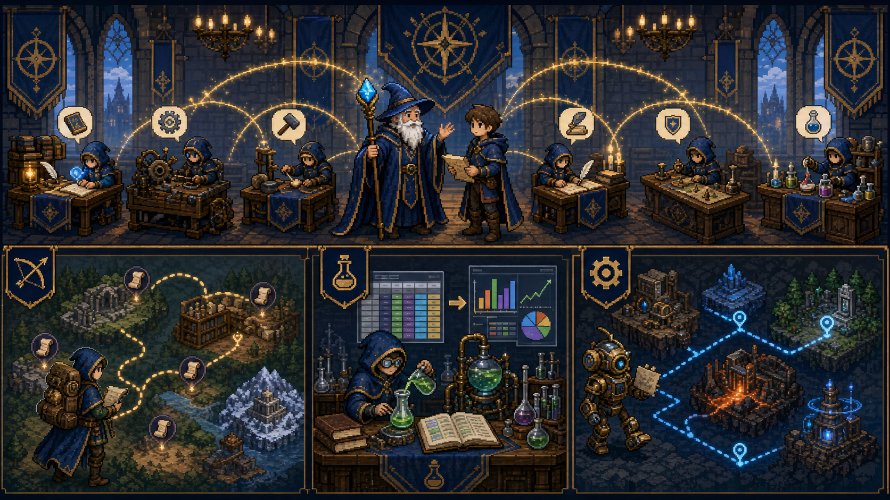
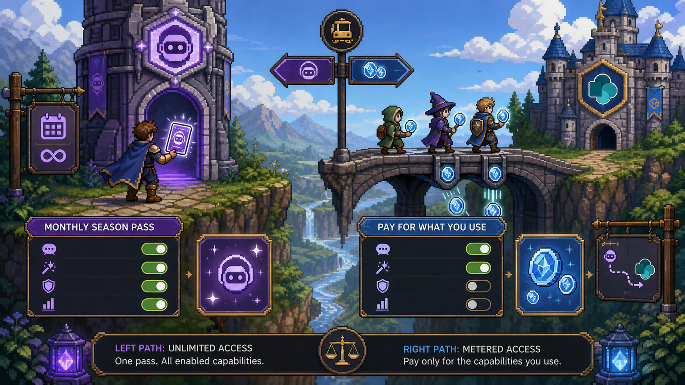
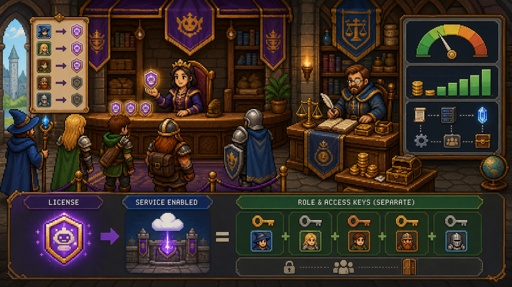
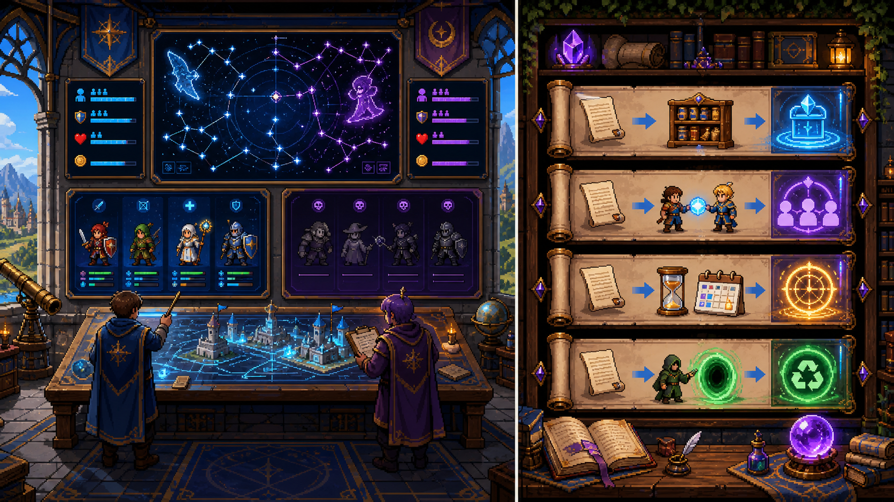
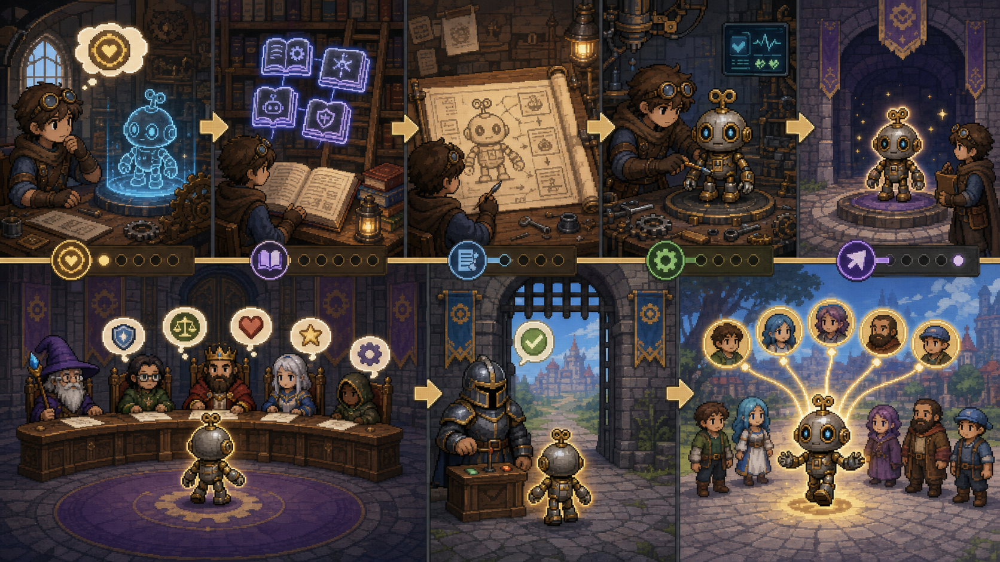
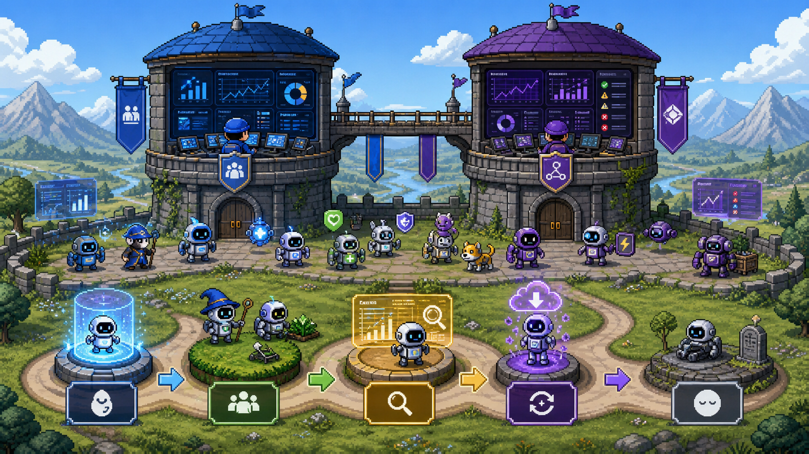

Mensal
Custo previsível e atribuição a usuários para capacidades licenciadas.
Aprenda a escolher, licenciar, publicar e acompanhar assistentes de IA como um administrador — do primeiro acesso à aposentadoria do agente.
Conclua as seis provas do mestre.
Escolha o herói pelo trabalho, não pelo nome mais poderoso.

O Copilot acompanha o usuário em tarefas cotidianas. O Researcher realiza pesquisas complexas e sintetiza fontes; o Analyst raciocina sobre dados. Um agente personalizado recebe conhecimento, instruções e ações para um processo específico.
| Necessidade | Escolha |
|---|---|
| Assistência ampla no fluxo de trabalho | Microsoft 365 Copilot |
| Pesquisa aprofundada e relatório | Researcher |
| Analisar dados, padrões e resultados | Analyst |
| Automatizar missão própria da organização | Custom agent |
⚡ SÊNIOR Agente não significa autonomia ilimitada: escopo, conhecimento, ações, identidade e controles determinam o que ele pode fazer.
Diferencie passe individual de consumo medido.

A licença mensal oferece capacidades do Copilot ao usuário licenciado. O modelo pay-as-you-go mede consumo por uma política de cobrança vinculada, inclusive em cenários de agentes no SharePoint. Nem todo recurso precisa ficar habilitado para todos.
Custo previsível e atribuição a usuários para capacidades licenciadas.
Cobrança baseada no uso, acompanhada por política de cobrança.
Recursos compatíveis podem ser habilitados ou desabilitados conforme estratégia e política.
Compare público, frequência, capacidade necessária, governança e custo.
⚡ SÊNIOR Modelo de cobrança, disponibilidade do recurso e acesso do usuário são decisões relacionadas, mas distintas.
Entregue a capacidade certa e vigie a tesouraria.

O administrador atribui licenças do Copilot a usuários elegíveis. Para consumo medido, cria e associa uma billing policy, depois monitora uso e custo. A licença habilita capacidade; permissões e políticas continuam controlando o acesso.
⚡ SÊNIOR Use grupos para escalar atribuições quando apropriado e trate remoção/recolocação como parte do ciclo de entrada, mudança e saída.
Ter licenças não prova que a IA produz valor.

Copilot Analytics e o centro de administração do Microsoft 365 ajudam a acompanhar uso e adoção. Prompts podem ser salvos, compartilhados, agendados e excluídos, permitindo reutilização e colaboração responsável.
Quem está ativo, com que frequência e em quais experiências.
Se a capacidade foi incorporada ao trabalho e onde há lacunas.
Salvar, compartilhar, agendar e excluir conforme a finalidade.
Combinar dados, comunicação, treinamento e governança.
⚡ SÊNIOR Métrica isolada não demonstra impacto. Separe disponibilidade, ativação, uso recorrente, cenário utilizado e resultado esperado.
Um bom agente nasce com missão clara e atravessa um portão de governança.

Crie o agente definindo finalidade, instruções, conhecimento e ações; teste respostas e limites; envie para o processo de aprovação; publique para o público correto. O acesso pode ser controlado por usuários, grupos e políticas.
⚡ SÊNIOR Aprovação avalia risco e adequação antes da ampla disponibilização; não substitui testes, permissões, proteção de dados ou monitoramento posterior.
Agentes publicados precisam de dono, sinais e uma saída digna.

O centro de administração do Microsoft 365 oferece visibilidade administrativa e de uso. O centro de administração do Power Platform ajuda com ambiente e insights operacionais. Monitore dono, uso, erros, mudanças e necessidade até atualizar ou retirar o agente.
| Torre | Observe |
|---|---|
| Microsoft 365 admin center | Inventário, acesso, uso e adoção no Microsoft 365 |
| Power Platform admin center | Ambientes, capacidade e insights operacionais relacionados |
| Ciclo de vida | Criar, aprovar, publicar, acompanhar, atualizar e aposentar |
⚡ SÊNIOR Agente sem uso, sem proprietário ou com fonte obsoleta é risco operacional. O ciclo termina com revisão e aposentadoria controlada, não com abandono.
Receba seis pedidos e decida como um administrador de IA.
Seis decisões em português antes do desafio em inglês.